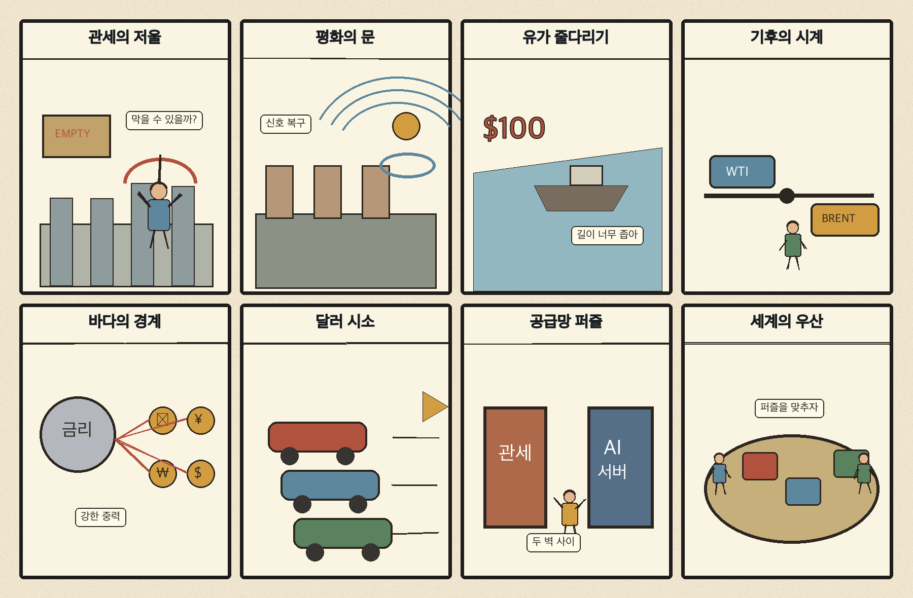
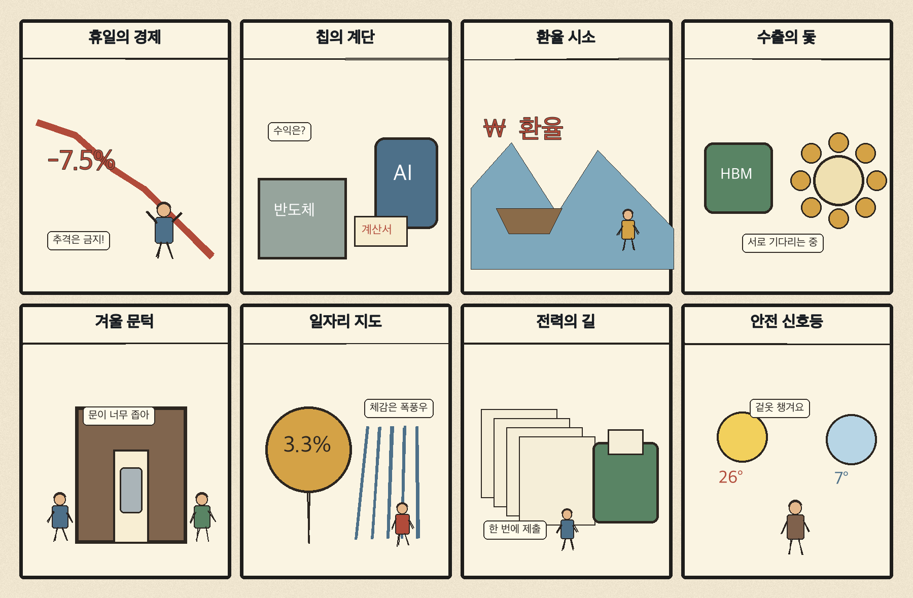

01
AMD · 566.79→534.06달러 · -5.77%
내용요약 시가 대비 -5.77%로 조사군 최하위 하락을 기록했습니다.
예상여파 AI 반도체 위험회피가 국내 반도체 대형주와 장비·소재 심리에 부담이 될 수 있습니다.
MORNING_BRIEFING_20261115
작성 시각: 2026-11-15 06:35 KST · 직전 미국 정규장과 2026-11-15 KST 당일 공개 기사 기준
11월 13일 뉴욕증시는 다우 +0.10%, S&P 500 -0.40%, 나스닥 -0.91%로 혼조 마감했습니다. 엔비디아 -4.16%, AMD -5.77%, 브로드컴 -2.67%로 AI 반도체가 약했고 메타·앱러빈·스포티파이는 상승해 기술주 내부 차별화가 컸습니다. 국내 시장은 13일 KOSPI -0.98%, KOSDAQ +0.45%로 엇갈려 다음 거래일에는 반도체 대형주의 낙폭과 외국인 수급 확인이 우선입니다.
| 지수 | 종가 | 등락률 | 한국 증시 시사점 |
|---|---|---|---|
| 다우존스 | 52,347.55 | +0.10% | 경기민감주 방어력은 남았지만 장중 변동성 확대 |
| S&P 500 | 7,561.67 | -0.40% | 성장주·반도체 투자심리에 부담 |
| 나스닥 종합 | 25,136.27 | -0.91% | 성장주·반도체 투자심리에 부담 |
미국 성장주 약세는 다음 거래일 국내 반도체 시초가에 부담입니다.
엔비디아 -4.16%, AMD -5.77%로 공급망 전반의 변동성 확대가 예상됩니다.
13일 시가 대비로는 -2.97%여서 장중 매물 압력이 더 컸습니다.
휴일 보고서로 다음 거래일 갭과 외국인 수급을 확인한 뒤 대응합니다.
11월 12일 보고서는 수급·컨센서스·30건 이상 유사 조건 표본을 모두 확보하지 못해 공식 추천을 내지 않았습니다. 11월 13일 장에 대해 사후 종목을 추가하지 않습니다.
| 시장 | 종가 | 등락률 | 기준 |
|---|---|---|---|
| KOSPI | 5,290.53 | -0.98% | 11월 13일 · 시가 대비 -2.97% |
| KOSDAQ | 699.66 | +0.45% | 11월 13일 · 시가 대비 -0.89% |
| 다우존스 | 52,347.55 | +0.10% | 미국 11월 13일 정규장 |
| S&P 500 | 7,561.67 | -0.40% | 미국 11월 13일 정규장 |
| 나스닥 종합 | 25,136.27 | -0.91% | 미국 11월 13일 정규장 |
앱러빈 +3.42%, 메타 +2.31%, 스포티파이 +1.95%였습니다.
홈디포 +1.36%, 월마트 +1.04%로 지수 대비 견조했습니다.
AMD -5.77%, 엔비디아 -4.16%, ARM -3.03%로 낙폭이 컸습니다.
크라우드스트라이크 -4.05%, 로켓랩 -3.41%로 성장주 위험회피가 나타났습니다.
내용요약 시가 대비 -5.77%로 조사군 최하위 하락을 기록했습니다.
예상여파 AI 반도체 위험회피가 국내 반도체 대형주와 장비·소재 심리에 부담이 될 수 있습니다.
내용요약 시가 대비 -4.16%로 하락하며 기술주 약세를 주도했습니다.
예상여파 실적 발표를 앞둔 기대와 경계가 교차해 국내 HBM 공급망 변동성도 커질 수 있습니다.
내용요약 시가 대비 +3.42%로 조사군 최상위 상승을 기록했습니다.
예상여파 기술주 약세 속 광고기술주의 상대강세는 성장주 내부의 선택적 순환을 보여줍니다.
내용요약 시가 대비 +2.31%로 상승했습니다.
예상여파 대형 플랫폼 가운데 차별화된 흐름이 이어졌지만 AI 투자비용 논쟁은 계속될 수 있습니다.
내용요약 시가 대비 -4.05%로 하락했습니다.
예상여파 고평가 성장주와 보안 소프트웨어의 변동성 확대를 경계할 필요가 있습니다.
일요일 휴장으로 국내 현물 거래는 없습니다. 다음 거래일에는 미국 AI 반도체 약세가 삼성전자·SK하이닉스 및 장비·소재주의 시초가에 부담을 줄 수 있습니다. 다만 미국 다우와 일부 플랫폼·소비주는 버텼으므로 장 초반 갭 하락 이후 외국인 현·선물 수급, KOSPI 5,250선 방어, 반도체 낙폭 축소 여부를 확인해야 합니다.
오늘은 추천 없음 — 현금 관망
일요일 휴장일이며 다음 거래일 개별 종목의 시가·수급을 확인할 수 없습니다. 종합점수 75점·상승확률 60%·예상 손익비 1.5와 30건 이상 유사 조건 표본을 모두 검증한 후보가 없어 공식 추천을 내지 않습니다.
관심 연결종목 HBM·전력망·피지컬 AI는 관찰 대상일 뿐 매수 추천이 아닙니다. 월요일 장전 갭 상승·하락 종목의 추격매수를 금지합니다.
실적 발표를 앞둔 기대와 변동성이 국내 반도체에 미치는 영향을 봅니다.
다음 거래일 KOSPI 대형주 매도 압력이 완화되는지 확인합니다.
13일 장중 저점 부근에서 매수세가 유입되는지 살핍니다.
관세·농산물 논의가 공급망 불확실성을 낮추는지 점검합니다.
핵심 요약: AI칩 경쟁은 엔비디아 독주에서 구글·AMD 등 다변화로 옮겨가고 있으며, 병목은 HBM과 전력망·원전 연료·정밀 로봇 하드웨어로 넓어지고 있습니다. 미국 시장의 반도체 급락으로 기술의 장기 성장성과 단기 주가 진입 시점을 분리해야 합니다.
내용요약 구글과 AMD가 AI 가속기 경쟁에서 엔비디아를 추격해도 고대역폭메모리 수요는 이어질 수 있다는 분석입니다.
예상여파 AI칩 경쟁 다변화는 삼성전자·SK하이닉스의 고객 기반 확대 기회가 될 수 있지만 공급 협상과 수율 경쟁도 강해질 수 있습니다.
내용요약 광주인공지능산업융합사업단이 국내 초격차 AI 스타트업 9곳의 미국 진출과 실리콘밸리 협력을 지원했다는 소식입니다.
예상여파 기술 검증과 현지 고객 확보가 실제 계약으로 이어지는지가 국내 AI 스타트업의 후속 투자 판단 기준이 될 수 있습니다.
내용요약 AI 데이터센터 전력 수요와 지정학적 긴장이 겹치며 우라늄 가격이 장기 고점권에 올랐다는 보도입니다.
예상여파 원전 연료와 전력 인프라 투자가 확대될 수 있지만 원자재 가격 급등은 발전 비용과 공급망 변동성을 키울 수 있습니다.
내용요약 체코가 전력망 현대화와 AI 데이터센터 투자를 확대하면서 전력기자재 수요가 늘고 있다는 보도입니다.
예상여파 변압기·송배전·전력관리 기업의 해외 수주 기회가 커질 수 있으며 납기와 현지 인증 역량이 중요해질 수 있습니다.
내용요약 미세한 힘을 감지하는 전자피부와 다관절 로봇손 등 피지컬 AI 기술이 스위스 로보틱스 행사에서 소개됐습니다.
예상여파 로봇 상용화 경쟁이 모델 성능에서 촉각·정밀제어·안전성 등 하드웨어 통합 역량으로 확장될 수 있습니다.
핵심 요약: 우크라이나 협상 조건과 핵심 인프라를 겨냥한 드론전이 안보 불확실성을 키우는 가운데 국제유가는 공급 과잉 전망으로 하락했습니다. 미·중 무역 협의가 완충재가 될 수 있지만 첨단칩 통제 갈등은 이어지고 있습니다.
내용요약 젤렌스키 대통령이 미국 측으로부터 나토 가입과 돈바스 영토 문제를 연계한 질의를 받았다고 밝혔다는 보도입니다.
예상여파 우크라이나 협상 조건을 둘러싼 불확실성이 커지면 유럽 안보와 에너지 시장의 위험 프리미엄이 이어질 수 있습니다.
내용요약 국제유가가 공급 과잉 전망과 매도 압력으로 2주 연속 하락했다는 보도입니다.
예상여파 유가 하락은 수입국의 물가 부담을 덜 수 있지만 산유국 재정과 에너지 기업 투자에는 부담이 될 수 있습니다.
내용요약 미국과 중국이 첫 무역위원회 회의를 열어 관세와 농산물 문제를 논의했다는 소식입니다.
예상여파 APEC 정상회담 전 실무 협의가 진전되면 글로벌 교역 불확실성을 낮출 수 있으나 구체적 합의 확인이 필요합니다.
내용요약 드론 공격 대상이 전력망·물류센터·위성통신 등 국가 핵심 인프라로 넓어지고 있다는 분석입니다.
예상여파 각국의 방공·사이버보안·인프라 복원력 투자가 늘면서 물류와 보험 비용도 높아질 수 있습니다.
내용요약 미국 연구소가 중국의 딥시크와 키미가 엔비디아 최첨단 칩을 활용해 훈련했다고 분석했다는 보도입니다.
예상여파 첨단 칩 수출통제의 실효성과 우회 공급망을 둘러싼 미·중 기술 갈등이 다시 부각될 수 있습니다.

핵심 요약: 국내 증시는 엔비디아 실적과 반도체 수급이 단기 방향을 좌우할 전망입니다. 수출·투자·소비 개선 신호가 나타났지만 청년 고용의 질과 전력망 유연성 같은 구조 과제도 함께 확인해야 합니다.
내용요약 이번 주 국내 증시는 엔비디아 실적과 글로벌 반도체 투자심리가 반등의 핵심 변수라는 전망입니다.
예상여파 대형 반도체주의 방향성이 KOSPI 변동성을 좌우할 가능성이 커 실적 발표 전후 추격매수보다 수급 확인이 중요합니다.
내용요약 9월 수출과 투자가 늘고 소비도 개선되며 정부가 견조한 성장 흐름을 평가했다는 정책 자료입니다.
예상여파 내수와 수출의 동반 개선이 이어지면 경기민감 업종에 우호적일 수 있으나 물가·금리 조건을 함께 봐야 합니다.
내용요약 경력직 선호가 강해지며 청년 임금근로자의 46%가 비정규직이라는 보도입니다.
예상여파 초기 경력 형성과 고용 안정성 격차가 소비 여력과 장기 생산성에 부담으로 작용할 수 있습니다.
내용요약 한국과 남아프리카공화국 등 4개국 전문가가 재생에너지 확대에 필요한 전력계통 유연성을 논의합니다.
예상여파 에너지저장장치·송배전망·수요관리 기술의 제도화와 투자 논의가 빨라질 수 있습니다.
내용요약 전국이 대체로 맑고 서울 낮 기온이 18도까지 오르는 포근한 늦가을 날씨가 예보됐습니다.
예상여파 아침 안개와 큰 일교차가 예상돼 이동 안전과 건강 관리가 필요합니다.
